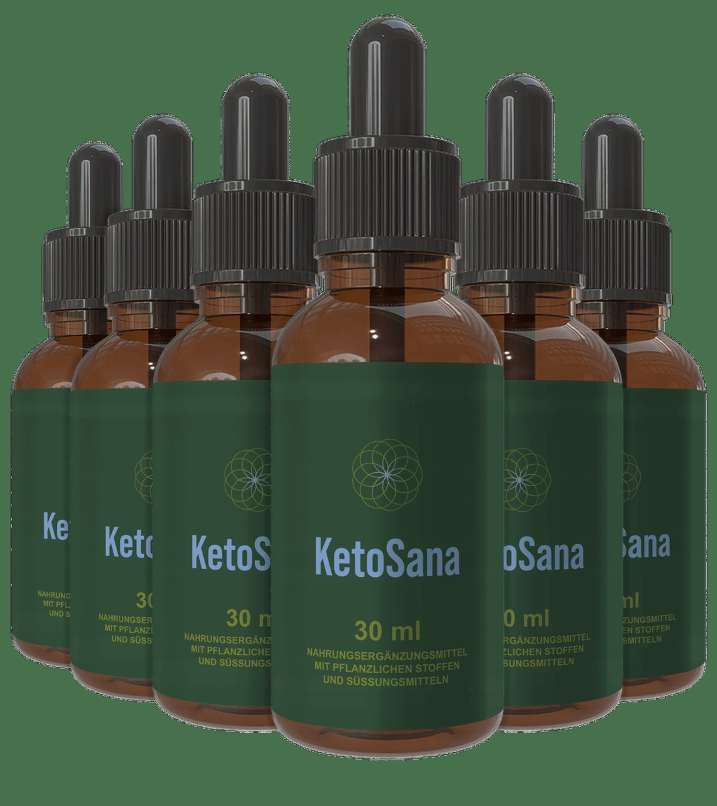

Support for ketosis and steady energy
Sharper focus, better energy, and less metabolic drag.
For people following a keto or low-carb routine, maintaining a stable rhythm can be the difference between feeling sharp and feeling heavy. KetoSana was developed to support ketone production, metabolic clarity, and a more consistent energy curve during the day.

KetoSana
Ketone support for better focusA performance-friendly metabolic formula designed for people seeking cleaner energy, smoother focus, and more consistency during keto and low-carb routines.
Key benefits
Build a more stable rhythm without the usual keto drag.
01
Ketone support
Created to help the body generate and sustain ketones more efficiently, which can support energy and mental clarity during keto routines.
02
Sharper daily focus
Helps reduce the "fog" often reported when transitioning or maintaining a low-carb lifestyle, especially during demanding workdays.
03
Less energy volatility
Designed to help smooth out energy swings and create a more even, productive rhythm throughout the day.
04
Better performance fit
Useful for people who want clean output, focus, and consistency without relying on sugar highs or jittery stimulants.
What is inside
Ingredients chosen for energy and metabolic clarity.
05
Metabolic support complex
- MCT oil (C8 & C10): rapidly converted into usable ketones for energy and mental clarity.
- BHB: supports exogenous ketone availability during fasting or carb restriction.
- L-carnitine: helps support fat metabolism and cellular energy production.
- Chromium picolinate: supports glucose balance and appetite control.
- CoQ10: contributes to normal cellular energy and antioxidant support.
06
Who is it for
KetoSana is a strong fit for people following a keto or low-carb plan, intermittent fasters, busy professionals, and anyone looking for more steadiness without relying on sugar crashes.
It is especially helpful when the goal is to feel more focused and less disrupted by energy dips during work, training, or long travel days.
Simple formula
A concise ingredient list. A clearer daily routine.
When your nutrition and energy habits are already structured, the goal is not to add noise — it is to reinforce consistency. KetoSana fits that philosophy.
"I wanted a cleaner way to support my keto routine without relying on stimulants or random powders. KetoSana gave me a steadier energy feel and a much clearer focus during the day."
— Verified performance-focused customerHow it works
Easy to use, easy to maintain.
07
Morning boost
Use it in the morning to help support ketone availability and a smoother start to the day.
08
Pre-workout support
Useful before training or intense work blocks when steady energy and mental clarity matter most.
09
Focus sessions
Helps maintain clarity during deep work, project execution, or long concentration windows.
10
Simple integration
Fits easily into coffee routines, fasted mornings, or low-carb meal plans without adding friction to the day.
Ready to step up your routine?
Go for cleaner energy and more stable focus.
Review the official offer, check the details, and decide if it matches your goals. Sometimes the best move is simply making your routine more efficient and less chaotic.